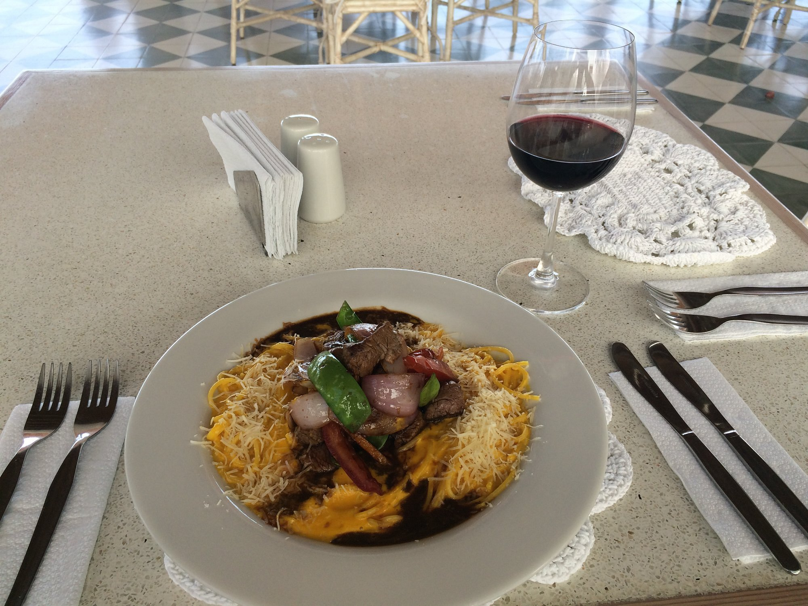
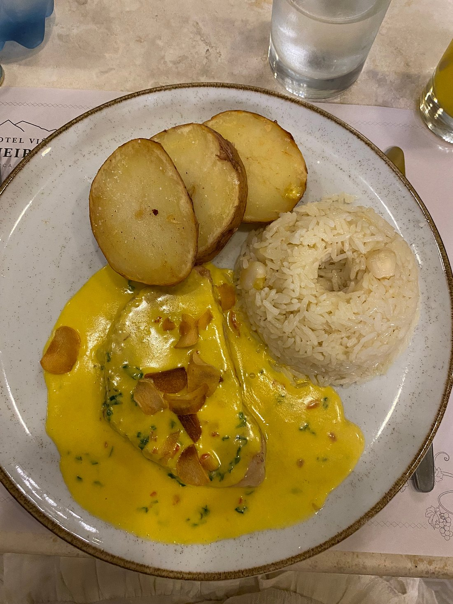
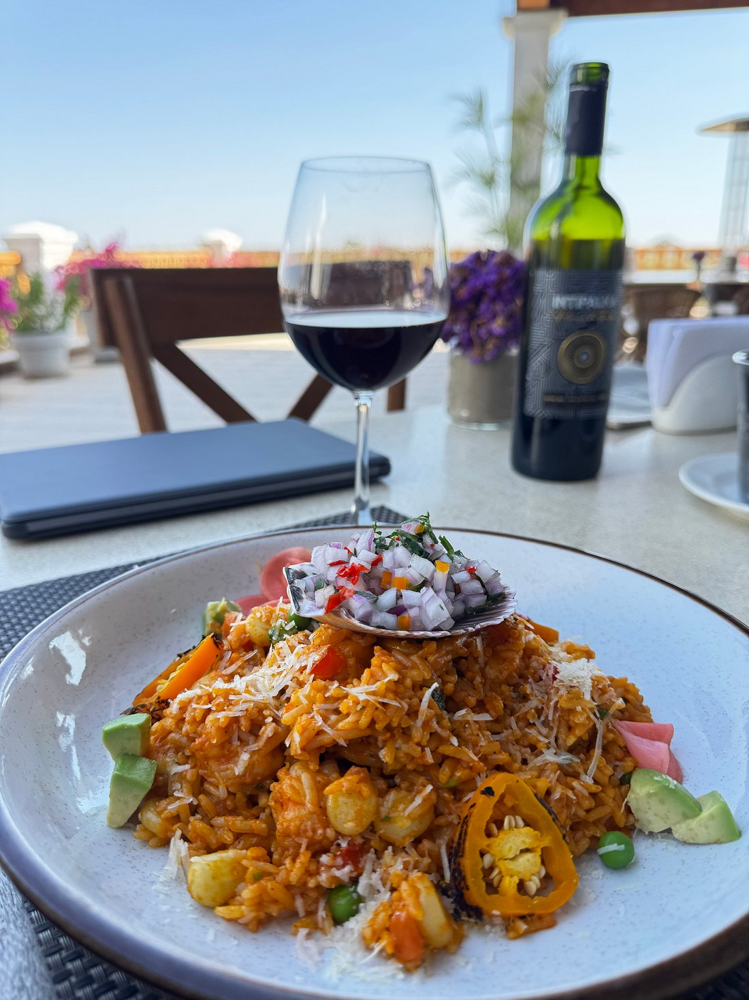
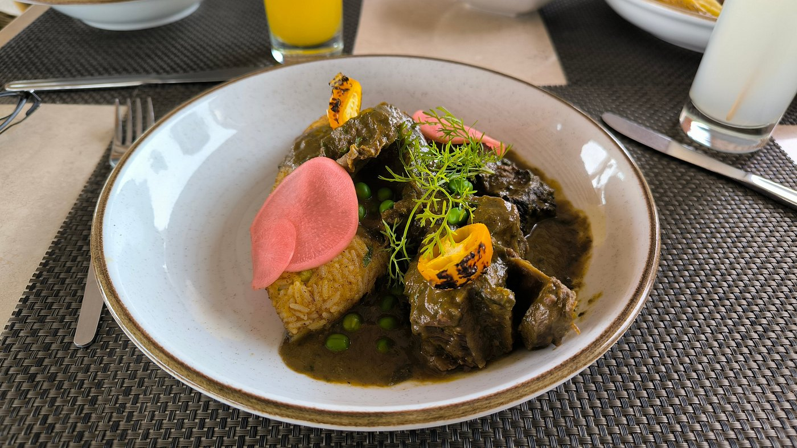
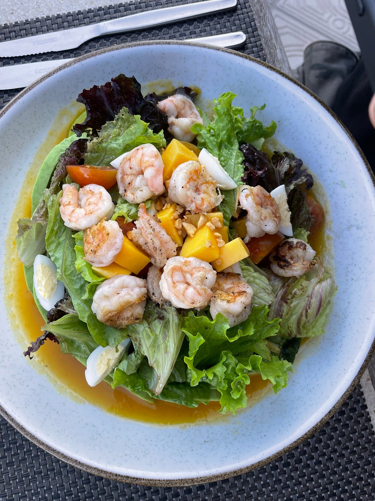
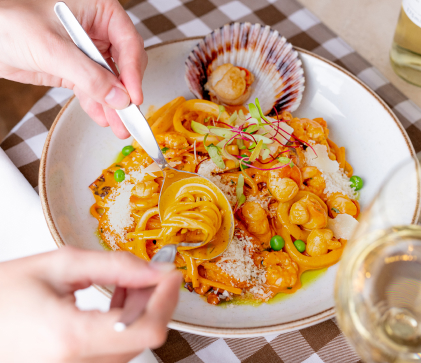
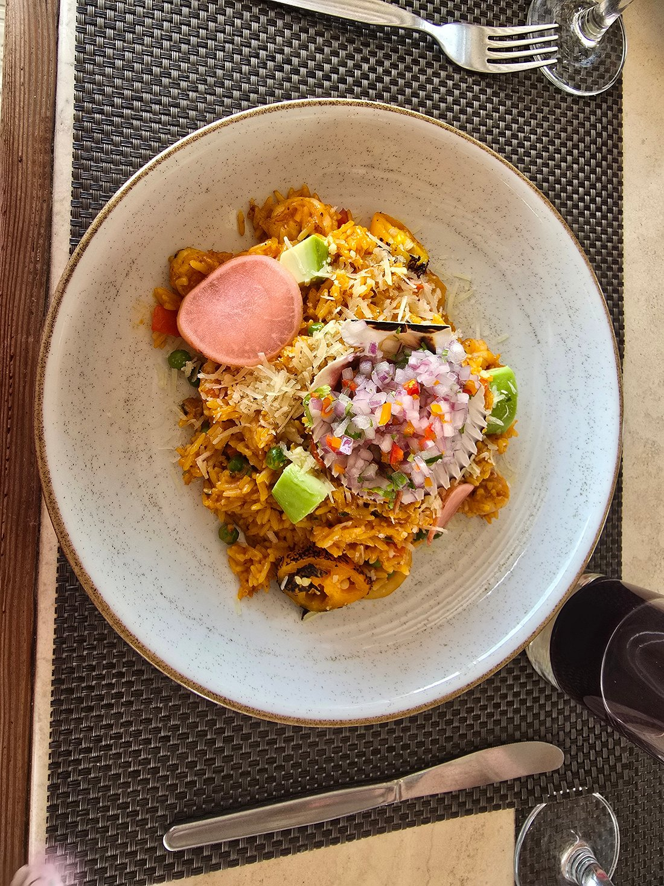

Platos Fuertes

Lomo Saltado al Pisco
S/ 62.00Trozos de lomo fino salteados al wok con cebolla, tomate, toque de pisco Queirolo y papas nativas.

Ají de Gallina Cremoso
S/ 45.00Pechuga de gallina deshilachada en crema suave de ají amarillo, nueces y arroz con choclo.

Arroz con Mariscos del Valle
S/ 58.00Arroz al estilo norteño salteado con mariscos selectos, ají panca y reducción de vino blanco.

Seco de Res con Pallares
S/ 56.00Carne de res estofada lentamente en salsa de culantro y chicha de jora, acompañada de pallares.

Paella Marina al Pisco
S/ 64.00Arroz al azafrán con langostinos, calamares, conchas y pulpo, perfumado con pisco Queirolo.

Langostinos al Ajo Crocante
S/ 52.00Colas de langostinos doradas en mantequilla de hierbas, láminas de ajo crocante y puré de pallar.

Arroz Meloso con Camarones
S/ 60.00Arroz cremoso aromatizado con ají amarillo y vino blanco, coronado con camarones dorados y pallares tiernos.

Linguini a la Huancaína con Lomo
S/ 58.00Pasta artesanal bañada en cremosa salsa a la huancaína, coronada con lomo fino salteado al wok y queso parmesano.

Calamares Crocantes al Pisco
S/ 48.00Aros de calamar marinados en pisco y fritos a la perfección, con yucas doradas, salsa criolla y tártara de la casa.
Desliza para descubrir los platos o usa las flechas.